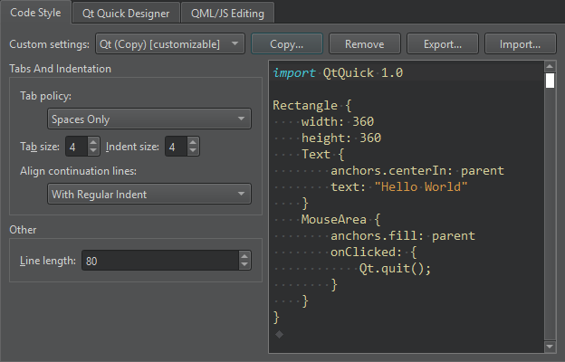

Qt Quick Code Style
To specify QML code style globally:
- Go to Preferences > Qt Quick > Code Style.
- In Custom settings, select the settings to modify, and then select Copy.

- Give a name to the settings, and select OK.
- Specify how to interpret the Tab key presses and how to align continuation lines.
- In Line length, set the maximum line length for code lines.
To override the global preferences for a particular project, select Projects > Code Style.
See also Automatically format QML/JS files, Indent text or code, Find preferences, and Specify code style.